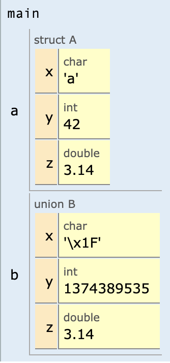

6. Δομές και ενώσεις
Σύνοψη Δομές, δηλώσεις δομών, η δεσμευμένη λέξη typedef, αρχικοποίηση δομής, δομές σε συναρτήσεις, σύγκριση δομών, δομές μέσα σε δομές, πίνακες με στοιχεία δομές, ενώσεις.
Προαπαιτούμενη γνώση Τύποι δεδομένων, είσοδος/έξοδος, δομές επιλογής και επανάληψης, συναρτήσεις, πίνακες.
6.1 Δήλωση δομών
Η δομή (structure) χρησιμοποιείται ως συλλογή μεταβλητών διαφορετικού τύπου προκειμένου να περιγράψει συνολικά μια οντότητα. Για παράδειγμα η οντότητα person (πρόσωπο) αποτελείται από τα πεδία:
- Όνομα (αλφαριθμητικό)
- Επώνυμο (αλφαριθμητικό)
- Ηλικία (ακέραιος αριθμός)
- Ύψος (δεκαδικός αριθμός)
Για τη δήλωση της δομής χρησιμοποιείται ο προσδιοριστής struct, όπως στη συνέχεια:
struct person {
char name[100];
char lastname[100];
int age;
double height;
};
Η δήλωση μιας δομής μοιάζει αρκετά με τη δήλωση συναρτήσεων, χωρίς όμως τον εκτελέσιμο κώδικα. Η δήλωση δομής δεν σημαίνει όμως και δήλωση μεταβλητής. Αυτό πρέπει να γίνει μέσα σε κάποια συνάρτηση, π.χ. στη main(), όπως:
Αυτή η δήλωση δημιουργεί μια μεταβλητή τύπου person με όνομα a_person. Ένα παράδειγμα χρήσης δομής παρουσιάζεται στον κώδικα 6.1. Για την αναφορά στα πεδία της δομής χρησιμοποιείται ο τελεστής τελείας (dot operator) που είναι γνωστός και ως τελεστής συμμετοχής. Κάθε πεδίο της μεταβλητής a_person μπορεί να χρησιμοποιηθεί και σαν διαφορετική μεταβλητή, δηλαδή για παράδειγμα η μεταβλητή a_person.age αντιμετωπίζεται σαν μια ξεχωριστή ακέραια μεταβλητή που στην περίπτωση του συγκεκριμένου προβλήματος αναπαριστά ηλικίες.
| Κώδικας 6.1: ch6_p1.c - εισαγωγή και εμφάνιση στοιχείων προσώπου. |
|---|
| #include <stdio.h>
struct person {
char name[100];
char lastname[100];
int age;
double height;
};
int main(void) {
struct person a_person;
printf("Input data for a person\n");
printf("First name: ");
scanf("%99s", a_person.name);
printf("Last name: ");
scanf("%99s", a_person.lastname);
printf("Age: ");
scanf("%d", &a_person.age);
printf("Height: ");
scanf("%lf", &a_person.height);
printf("Person's data\n");
printf("%s %s\n", a_person.name, a_person.lastname);
printf("%d %lf\n", a_person.age, a_person.height);
if (a_person.age >= 18) {
printf("Adult\n");
} else {
printf("Not an adult\n");
}
return 0;
}
|
Ένα παράδειγμα εκτέλεσης του κώδικα για τιμές που εισάγει ο χρήστης παρουσιάζεται στη συνέχεια:
Input data for a person
First name: John
Last name: Doe
Age: 30
Height: 1.8
Person's data
John Doe
30 1.800000
Adult
| Κώδικας 6.2: ch6_p2.c - εμφάνιση μέσου όρου βαθμών φοιτητή. |
|---|
| #include <stdio.h>
#include <string.h>
#define NLESSONS 3
struct student {
int id;
char name[100], lastname[100];
double lessons[NLESSONS];
};
double average(const double x[], int n) {
int i;
double sum = 0.0;
for (i = 0; i < n; i++)
sum += x[i];
return sum / n;
}
int main(void) {
struct student giannis;
strcpy(giannis.name, "Giannis");
strcpy(giannis.lastname, "Pappas");
giannis.id = 1000;
giannis.lessons[0] = 8.5;
giannis.lessons[1] = 7.;
giannis.lessons[2] = 6.5;
printf("Average grade for [%d, %s, %s]: %.2lf\n", giannis.id,
giannis.lastname, giannis.name, average(giannis.lessons, NLESSONS));
return 0;
}
|
Η έξοδος του προγράμματος θα είναι η ακόλουθη:
Average grade for [1000, Pappas, Giannis]: 7.33
6.2 Χρήση του typedef
Η δεσμευμένη λέξη typedef χρησιμοποιείται για να ορίσει νέους τύπους δεδομένων ως ψευδώνυμα άλλων τύπων, προκειμένου να χρησιμοποιηθούν ονόματα που απομνημονεύονται ευκολότερα. Για παράδειγμα η δήλωση:
typedef double big_number;
ορίζει πως το όνομα big_number μπορεί να χρησιμοποιηθεί ως ψευδώνυμο του ενσωματωμένου τύπου δεδομένων double. Συνεπώς η δήλωση:
και η δήλωση
είναι ακριβώς οι ίδιες.
Η δεσμευμένη λέξη typedef μπορεί να χρησιμοποιηθεί για να αντικαταστήσει πίνακες με τύπους δεδομένων που ορίζονται από τον χρήστη, όπως στον κώδικα 6.3, όπου δηλώνεται ένας νέος τύπος για αλφαριθμητικά ως ψευδώνυμο σε πίνακα χαρακτήρων. Ο νέος τύπος δεδομένων ονομάστηκε string και η χρήση του δεν περιλαμβάνει τον προσδιορισμό του πλήθους χαρακτήρων καθώς αυτό ορίζεται στη δήλωση του τύπου.
| Κώδικας 6.3: ch6_p3.c - δήλωση τύπου αλφαριθμητικού. |
|---|
| #include <stdio.h>
typedef char string[100];
int main(void) {
string myname;
printf("Input your name: ");
scanf("%99s", myname);
printf("Your name is %s\n", myname);
return 0;
}
|
μπορεί να αντικατασταθεί με τη συντομότερη:
Συνεπώς, η δήλωση της δομής μπορεί να γίνει με τη βοήθεια της δεσμευμένης λέξης typedef που παρουσιάστηκε νωρίτερα. Ένα ενδεικτικό παράδειγμα χρήσης παρουσιάζεται στον κώδικα 6.4.
| Κώδικας 6.4: ch6_p4.c - ο τύπος δομής person με χρήση typedef. |
|---|
| #include <stdio.h>
typedef struct {
char name[100];
char lastname[100];
int age;
double height;
} person;
int main(void) {
person a_person;
printf("Input data for a person\n");
printf("First name: ");
scanf("%99s", a_person.name);
printf("Last name: ");
scanf("%99s", a_person.lastname);
printf("Age: ");
scanf("%d", &a_person.age);
printf("Height: ");
scanf("%lf", &a_person.height);
printf("Person's data\n");
printf("%s %s\n", a_person.name, a_person.lastname);
printf("%d %lf\n", a_person.age, a_person.height);
if (a_person.age >= 18) {
printf("Adult\n");
} else {
printf("Not an adult\n");
}
return 0;
}
|
Το προηγούμενο παράδειγμα μπορεί να συνδυαστεί με τον τύπο string και να προκύψει ο ισοδύναμος κώδικας 6.5.
| Κώδικας 6.5: ch6_p5.c - ο τύπος δομής person με χρήση typedef και χρήση του βοηθητικού τύπου string. |
|---|
| #include <stdio.h>
typedef char string[100];
typedef struct {
string name;
string lastname;
int age;
double height;
} person;
int main(void) {
person a_person;
printf("Input data for a person\n");
printf("First name: ");
scanf("%99s", a_person.name);
printf("Last name: ");
scanf("%99s", a_person.lastname);
printf("Age: ");
scanf("%d", &a_person.age);
printf("Height: ");
scanf("%lf", &a_person.height);
printf("Person's data\n");
printf("%s %s\n", a_person.name, a_person.lastname);
printf("%d %lf\n", a_person.age, a_person.height);
if (a_person.age >= 18) {
printf("Adult\n");
} else {
printf("Not an adult\n");
}
return 0;
}
|
6.3 Αρχικοποίηση δομής
Μια μεταβλητή δομής μπορεί να αρχικοποιηθεί με αναθέσεις και είσοδο τιμών από τον χρήστη αλλά μπορεί να αρχικοποιηθεί ταυτόχρονα με τη δήλωση, όπως και οι πίνακες. Ένα απλό παράδειγμα αρχικοποίησης της δομής person που αναφέρθηκε παραπάνω παρουσιάζεται στον κώδικα 6.6. Η αρχικοποίηση γίνεται απευθείας κατά τη δήλωση της μεταβλητής.
| Κώδικας 6.6: ch6_p6.c - αρχικοποίηση δομής κατά τη δήλωση. |
|---|
| #include <stdio.h>
struct person {
char name[100];
char lastname[100];
int age;
double height;
};
int main(void) {
struct person a_person = {"Giannis", "Pappas", 37, 171};
printf("Person's data\n");
printf("%s %s\n", a_person.name, a_person.lastname);
printf("%d %lf\n", a_person.age, a_person.height);
if (a_person.age >= 18) {
printf("Adult\n");
} else {
printf("Not an adult\n");
}
return 0;
}
|
| Κώδικας 6.7: ch6_p7.c - αρχικοποίηση δομής κατά τη δήλωση του τύπου της δομής (ch6_p7.c). |
|---|
| #include <stdio.h>
struct person {
char name[100];
char lastname[100];
int age;
double height;
} a_person = {"Giannis", "Pappas", 37, 171};
int main(void) {
printf("Person's data\n");
printf("%s %s\n", a_person.name, a_person.lastname);
printf("%d %lf\n", a_person.age, a_person.height);
if (a_person.age >= 18)
printf("Adult\n");
else
printf("Not an adult\n");
return 0;
}
|
6.4 Συναρτήσεις και δομές
Οι δομές μπορούν να χρησιμοποιηθούν ως παράμετροι συναρτήσεων αλλά και ως τιμές επιστροφής. Στο παράδειγμα του κώδικα 6.8 παρουσιάζεται μια εφαρμογή που δέχεται από τον χρήστη την ώρα, την αποθηκεύει σε μορφή δομής και την εμφανίζει σε 12ωρη ή σε 24ωρη μορφή. Η δομή time χρησιμοποιείται για την αναπαράσταση της χρονικής στιγμής με τη χρήση των πεδίων: ώρα, λεπτά, δευτερόλεπτα. Η συνάρτηση read_time() διαβάζει από τον χρήστη την τοπική μεταβλητή δομής t και την επιστρέφει με return. Από την άλλη μεριά, η συνάρτηση print_time() δέχεται δύο ορίσματα:
-
Μια μεταβλητή τύπου time με όνομα t. Αυτή η μεταβλητή αναπαριστά τη χρονική στιγμή που θα εμφανιστεί στην οθόνη.
-
Μια ακέραια μεταβλητή με όνομα flag24. Αν αυτή η τιμή είναι 1 (αληθής), τότε η χρονική στιγμή θα εμφανιστεί στην οθόνη με 24ωρη μορφή αλλιώς με 12ωρη μορφή.
| Κώδικας 6.8: ch6_p8.c - ανάγνωση και εμφάνιση ώρας. |
|---|
| #include <stdio.h>
typedef struct {
int hour;
int minute;
int second;
} time;
time read_time(void) {
time t;
printf("Input hours, minutes, seconds: ");
scanf("%d%d%d", &t.hour, &t.minute, &t.second);
return t;
}
void print_time(time t, int flag24) {
int hour = (flag24 == 1 || t.hour < 12) ? t.hour : t.hour - 12;
printf("%d:%d:%d\n", hour, t.minute, t.second);
}
int main(void) {
time a_time = read_time();
print_time(a_time, 0);
print_time(a_time, 1);
return 0;
}
|
Μια πιθανή είσοδος και έξοδος του προγράμματος είναι η ακόλουθη:
Input hours, minutes , seconds: 14 30 20
2:30:20
14:30:20
- Αν τα δευτερόλεπτα γίνουν 60, τότε πρέπει να αυξηθούν τα λεπτά κατά 1 και τα δευτερόλεπτα να γίνουν 0.
- Αν τα λεπτά γίνουν 60, τότε πρέπει να αυξηθούν οι ώρες κατά 1 και τα λεπτά να γίνουν 0.
- Αν οι ώρες γίνουν 24, τότε σημαίνει πως είμαστε στα μεσάνυχτα και επομένως οι ώρες πρέπει να γίνουν 0.
| Κώδικας 6.9: ch6_p9.c - συνάρτηση που μετατοπίζει τη χρονική στιγμή κατά 1 δευτερόλεπτο εμπρός. |
|---|
| #include <stdio.h>
typedef struct {
int hour;
int minute;
int second;
} time;
time read_time(void) {
time t;
printf("Input hours, minutes, seconds: ");
scanf("%d%d%d", &t.hour, &t.minute, &t.second);
return t;
}
void print_time(time t, int flag24) {
int hour = (flag24 == 1 || t.hour < 12) ? t.hour : t.hour - 12;
printf("%d:%d:%d\n", hour, t.minute, t.second);
}
time advance_time(time t) {
t.second++;
if (t.second == 60) {
t.second = 0;
t.minute++;
if (t.minute == 60) {
t.minute = 0;
t.hour++;
if (t.hour == 24) {
t.hour = 0;
}
}
}
return t;
}
int main(void) {
time a_time, a_time_plus;
a_time = read_time();
print_time(a_time, 1);
a_time_plus = advance_time(a_time);
print_time(a_time_plus, 1);
return 0;
}
|
Μια πιθανή είσοδος και έξοδος του προγράμματος είναι η ακόλουθη:
Input hours, minutes , seconds: 16 17 59
16:17:59
16:18:0
6.5 Σύγκριση δομών
Οι δομές είναι σύνθετοι τύποι δεδομένων και ως τέτοιοι δεν μπορούν να συγκριθούν άμεσα. Το παράδειγμα
student t1,t2;
if (t1 == t2) {...}
Στο παράδειγμα του κώδικα 6.10, δηλώνονται δύο μεταβλητές τύπου student και συγκρίνονται ως προς τον μέσο όρο της βαθμολογίας με χρήση ξεχωριστής συνάρτησης. Η συνάρτηση is_better() δέχεται ως ορίσματα τη μεταβλητή first και τη μεταβλητή second. Αν ο μέσος όρος του πρώτου φοιτητή είναι μεγαλύτερος από τον μέσο όρο του δεύτερου, η συνάρτηση επιστρέφει 1, αν ισχύει το αντίστροφο επιστρέφει -1, και αν οι μέσοι όροι είναι ίσοι, επιστρέφει 0. Στη συνάρτηση main() του ίδιου προγράμματος παρουσιάζεται μια ενδεικτική χρήση της συνάρτησης.
| Κώδικας 6.10: ch6_p10.c - σύγκριση φοιτητών ως προς τον μέσο όρο τους. |
|---|
| #include <stdio.h>
#include <math.h>
#define NLESSONS 3
typedef struct {
int id;
char name[100], lastname[100];
double lessons[NLESSONS];
} student;
double average(const double x[], int n) {
double sum = 0.0;
for (int i = 0; i < n; i++) {
sum += x[i];
}
return sum / n;
}
int is_better(student first, student second) {
// στρογγυλοποίηση στο δεύτερο δεκαδικό ψηφίο με τη roundf
float avg_first = roundf(average(first.lessons, NLESSONS) * 100.0) / 100.0;
float avg_second = roundf(average(second.lessons, NLESSONS) * 100.0) / 100.0;
if (avg_first > avg_second) {
return 1;
} else if (avg_first == avg_second) {
return 0;
} else {
return -1;
}
}
int main(void) {
student giannis = {1000, "Giannis", "Pappas", {8.5, 9., 7.5}};
student nikos = {1001, "Nikos", "Ioannou", {6.5, 9., 5.}};
if (is_better(giannis, nikos) == 1) {
printf(
"Student %s %s (%d) has better average grade than student %s %s (%d)\n",
giannis.name, giannis.lastname, giannis.id, nikos.name, nikos.lastname,
nikos.id);
} else if (is_better(giannis, nikos) == -1) {
printf(
"Student %s %s (%d) has better average grade than student %s %s (%d)\n",
nikos.name, nikos.lastname, nikos.id, giannis.name, giannis.lastname,
giannis.id);
} else {
printf("Both students have the same average grade\n");
}
return 0;
}
|
Student Giannis Pappas (1000) has better average grade than student Nikos Ioannou
↪ (1001)
- 1, αν το πρώτο όρισμα αφορά χρονική στιγμή μεταγενέστερη του δεύτερου ορίσματος. Για παράδειγμα η χρονική στιγμή 12:59:21 είναι μεταγενέστερη της χρονικής στιγμής 12:36:39 και επομένως η συνάρτηση θα επιστρέψει 1 σε αυτήν την περίπτωση.
- 0, αν οι δύο χρονικές στιγμές είναι ίδιες.
- -1, αν η δεύτερη χρονική στιγμή είναι μεταγενέστερη της πρώτης.
Η συνάρτηση compare_time() πρώτα μετατρέπει τις χρονικές στιγμές σε δευτερόλεπτα με τη χρήση της βοηθητικής συνάρτησης time2seconds() και στη συνέχεια συγκρίνει τα δευτερόλεπτα που προκύπτουν για κάθε χρονική στιγμή.
| Κώδικας 6.11: ch6_p11.c - σύγκριση χρονικών στιγμών. |
|---|
| #include <stdio.h>
typedef struct {
int hour;
int minute;
int second;
} time;
time read_time(void) {
time t;
printf("Input hours, minutes, seconds: ");
scanf("%d%d%d", &t.hour, &t.minute, &t.second);
return t;
}
int time2seconds(time t) {
return t.hour * 60 * 60 + t.minute * 60 + t.second;
}
int compare_time(time t1, time t2) {
int t1seconds = time2seconds(t1);
int t2seconds = time2seconds(t2);
if (t1seconds > t2seconds) {
return 1;
} else if (t1seconds < t2seconds) {
return -1;
} else {
return 0;
}
}
int main(void) {
time time1, time2;
int t;
time1 = read_time();
time2 = read_time();
t = compare_time(time1, time2);
if (t == 1) {
printf("The first time that was given is greater\n");
} else if (t == -1) {
printf("The second time that was given is greater\n");
} else {
printf("Both times are equal\n");
}
return 0;
}
|
Input hours, minutes , seconds: 10 20 30
Input hours, minutes , seconds: 11 10 20
The second time that was given is greater
6.6 Δομές με δομές ως πεδία
Οι δομές μπορούν να χρησιμοποιούνται και ως πεδία άλλων δομών όταν αυτό απαιτείται. Για παράδειγμα η δομή person μπορεί να περιλαμβάνει τη δομή date ως πεδίο της, π.χ. με το πεδίο birthdate (ημερομηνία γέννησης). Το θέμα αυτό παρουσιάζεται στον κώδικα 6.12 όπου η δομή date χρησιμοποιείται για την αναπαράσταση ημερομηνιών. Τα πεδία της δομής είναι τα έτος, μήνας και ημέρα. Στη συνέχεια παρουσιάζεται η δήλωση της δομής person για την αναπαράσταση προσώπων. Σε αυτήν τη δομή δηλώνεται, εκτός του ονόματος και του επωνύμου, και μια ακόμα μεταβλητή με όνομα birthdate που είναι τύπου date. Οι συναρτήσεις που περιέχει αυτό το πρόγραμμα έχουν την ακόλουθη σημασία:
- Η συνάρτηση read_date() διαβάζει και επιστρέφει τα στοιχεία ημερομηνίας.
- Η συνάρτηση print_date() εκτυπώνει στην οθόνη τα στοιχεία μιας ημερομηνίας τύπου date.
- Η συνάρτηση read_person() διαβάζει και επιστρέφει τα στοιχεία μιας δομής τύπου person. Για να διαβάσει την ημερομηνία γέννησης χρησιμοποιεί τη συνάρτηση read_date().
- Η συνάρτηση print_person() εκτυπώνει στην οθόνη τα στοιχεία μιας μεταβλητής τύπου person.
Για την εμφάνιση της ημερομηνίας γέννησης χρησιμοποιείται η συνάρτηση print_date().
| Κώδικας 6.12: ch6_p12.c - παράδειγμα δομής (πρόσωπο) με ένθετη δομή. |
|---|
| #include <stdio.h>
typedef struct {
int year;
int month;
int day;
} date;
typedef struct {
char name[100];
char lastname[100];
date birthdate;
} person;
date read_date(void) {
date d;
printf("Input a birth date: ");
scanf("%d%d%d", &d.day, &d.month, &d.year);
return d;
}
void print_date(date d) { printf("%d/%d/%d\n", d.day, d.month, d.year); }
person read_person(void) {
person p;
printf("Input first name and last name: ");
scanf("%99s%99s", p.name, p.lastname);
p.birthdate = read_date();
return p;
}
void print_person(person p) {
printf("Person's data:\n");
printf("%s, %s\n", p.name, p.lastname);
print_date(p.birthdate);
}
int main(void) {
person a_person;
a_person = read_person();
print_person(a_person);
return 0;
}
|
Input first name and last name: John Doe
Input a birth date: 1 1 1970
Person's data:
John, Doe
1/1/1970
| Κώδικας 6.13: ch6_p13.c - αλλαγή έτους γέννησης προσώπου. |
|---|
| #include <stdio.h>
typedef struct {
int year;
int month;
int day;
} date;
typedef struct {
char name[100];
char lastname[100];
date birthdate;
} person;
date read_date(void) {
date d;
printf("Input a birth date: ");
scanf("%d%d%d", &d.day, &d.month, &d.year);
return d;
}
void print_date(date d) { printf("%d/%d/%d\n", d.day, d.month, d.year); }
person read_person(void) {
person p;
printf("Input first name and last name: ");
scanf("%99s%99s", p.name, p.lastname);
p.birthdate = read_date();
return p;
}
void print_person(person p) {
printf("Person's data:\n");
printf("%s, %s\n", p.name, p.lastname);
print_date(p.birthdate);
}
person make_younger(person p) {
person temp = p; // δημιουργία αντιγράφου
temp.birthdate.year++;
return temp;
}
int main(void) {
person a_person, b_person;
a_person = read_person();
b_person = make_younger(a_person);
print_person(b_person);
return 0;
}
|
Input first name and last name: John Doe
Input a birth date: 1 1 1970
Person's data:
John, Doe
1/1/1971
6.7 Πίνακες δομών
Όπως ένας πίνακας μπορεί να περιέχει απλά στοιχεία έτσι μπορεί να περιέχει και δομές. Για παράδειγμα οι μαθητές μιας τάξης θα μπορούσαν να αποτελέσουν έναν πίνακα από δομές όπως και οι υπάλληλοι μιας επιχείρησης. Στον κώδικα 6.14 δημιουργείται ένας πίνακας από υπαλλήλους με πεδία: επώνυμο, αριθμός τμήματος και μισθός. Στη συνέχεια εμφανίζεται στην οθόνη το πλήθος των υπαλλήλων που λαμβάνουν λιγότερα από 1000 ευρώ τον μήνα.
| Κώδικας 6.14: ch6_p14.c - πίνακας υπαλλήλων. |
|---|
| #include <stdio.h>
typedef struct {
char lastname[100];
int depid;
double salary;
} employee;
employee read_employee(void) {
employee p;
printf("Input name, department id and month salary of employee: ");
scanf("%99s %d %lf", p.lastname, &p.depid, &p.salary);
return p;
}
int main(void) {
employee table[5];
int total = 0;
for (int i = 0; i < 5; i++) {
table[i] = read_employee();
if (table[i].salary < 1000)
total++;
}
printf("%d employees are payed less than 1000 euro per month\n", total);
return 0;
}
|
Επιπλέον, στον κώδικα 6.15 παρουσιάζεται η συνάρτηση sort_employee() που ταξινομεί(1) σε φθίνουσα σειρά έναν πίνακα υπαλλήλων ως προς τον μισθό τους. Στη συνάρτηση main() του ίδιου προγράμματος παρουσιάζεται μια ενδεικτική χρήση της.
- Η ταξινόμηση γίνεται με τον απλό αλγόριθμο bubble sort.
| Κώδικας 6.15: ch6_p15.c - ταξινόμηση πίνακα υπαλλήλων. |
|---|
| #include <stdio.h>
typedef struct {
char lastname[100];
int depid;
double salary;
} employee;
void sort_employee(employee t[], int n) {
int i, j;
for (i = 0; i < n; i++) {
for (j = 0; j < n - 1; j++) {
if (t[j + 1].salary > t[j].salary) {
employee temp;
temp = t[j];
t[j] = t[j + 1];
t[j + 1] = temp;
}
}
}
}
int main(void) {
employee table[5] = {{"Ioannou", 100, 1900.0},
{"Pappas", 200, 800.50},
{"Dimitriou", 100, 1320.55},
{"Christou", 200, 761.53},
{"Evangelou", 100, 1190.55}};
sort_employee(table, 5);
for (int i = 0; i < 5; i++) {
printf("Employee: %2d Lastname: %10s Department: %4d Salary: %10.2lf\n",
i + 1, table[i].lastname, table[i].depid, table[i].salary);
}
return 0;
}
|
Η έξοδος του προγράμματος είναι η ακόλουθη:
Employee: 1 Lastname: Ioannou Department: 100 Salary: 1900.00
Employee: 2 Lastname: Dimitriou Department: 100 Salary: 1320.55
Employee: 3 Lastname: Evangelou Department: 100 Salary: 1190.55
Employee: 4 Lastname: Pappas Department: 200 Salary: 800.50
Employee: 5 Lastname: Christou Department: 200 Salary: 761.53
6.8 Ενώσεις
Οι ενώσεις (unions) είναι παρόμοιες με τις δομές, αλλά με τη διαφορά πως σε κάθε χρονική στιγμή μόνο ένα μέλος της ένωσης μπορεί να έχει τιμή. Για παράδειγμα η δήλωση:
typedef union {
int ival;
float fval;
double dval;
} itype;
δηλώνει μια ένωση με το όνομα itype. Ένα παράδειγμα χρήσης της παρουσιάζεται στον κώδικα 6.16 όπου σε κάθε χρονική στιγμή μόνο μια από τις μεταβλητές είναι έγκυρη. Το συνολικό μέγεθος της μεταβλητής var σε bytes είναι το μεγαλύτερο από τα στοιχεία της ένωσης. Σε αυτήν την περίπτωση, επειδή ο τύπος double έχει το μεγαλύτερο μέγεθος (8 bytes), το μέγεθος της ένωσης θα είναι 8 bytes.
| Κώδικας 6.16: ch6_p16.c - παράδειγμα χρήσης μεταβλητής ένωσης. |
|---|
| #include <stdio.h>
typedef union {
int ival;
float fval;
double dval;
} itype;
int main(void) {
itype var;
var.ival = 100;
printf("Integer value :%d \n", var.ival);
var.fval = 22.56;
printf("Float value: %f \n", var.fval);
var.dval = 1929.37;
printf("Double value: %lf \n", var.dval);
printf("Now integer value: %d\n", var.ival);
return 0;
}
|
Integer value :100
Float value: 22.559999
Double value: 1929.370000
Now integer value: ‐515396076
| Κώδικας 6.17: ch6_p17.c - παράδειγμα βελτιωμένης χρήσης ένωσης. |
|---|
| #include <stdio.h>
#define INTTYPE 1
#define FLOATTYPE 2
#define DOUBLETYPE 3
typedef unsigned char byte;
typedef union {
int ival;
float fval;
double dval;
} itype;
typedef struct {
itype value;
byte flag;
} number;
number read_number(byte flag) {
number x;
x.flag = flag;
switch (flag) {
case INTTYPE:
scanf("%d", &x.value.ival);
break;
case FLOATTYPE:
scanf("%f", &x.value.fval);
break;
case DOUBLETYPE:
scanf("%lf", &x.value.dval);
break;
}
return x;
}
void print_number(number x) {
switch (x.flag) {
case INTTYPE:
printf("Integer: %d\n", x.value.ival);
break;
case FLOATTYPE:
printf("Float: %f\n", x.value.fval);
break;
case DOUBLETYPE:
printf("Double: %lf\n", x.value.dval);
break;
}
}
int main(void) {
number a_number;
printf("Input an int: ");
a_number = read_number(INTTYPE);
print_number(a_number);
printf("Input a double: ");
a_number = read_number(DOUBLETYPE);
print_number(a_number);
return 0;
}
|
Μια πιθανή είσοδος και έξοδος του προγράμματος είναι η ακόλουθη:
Input an int: 42
Integer: 42
Input a double: 3.14
Double: 3.140000
6.9 Δομές και ενώσεις
Οι δομές και οι ενώσεις μοιάζουν μεταξύ τους, αλλά έχουν σημαντικές διαφορές που συνοψίζονται στον Πίνακα 6.1.
Πίνακας 6.1: Σύγκριση δομών (structs) και ενώσεων (unions).
| Χαρακτηριστικό |
struct |
union |
| Διάταξη Μνήμης |
Κάθε μεταβλητή σε μια δομή έχει τον δικό της χώρο στη μνήμη. |
Όλες οι μεταβλητές σε μια ένωση μοιράζονται τον ίδιο χώρο στη μνήμη. |
| Συνολικό Μέγεθος |
Το μέγεθος μιας δομής είναι ίσο με το συνολικό μέγεθος όλων των μεταβλητών που περιέχει. |
Το μέγεθος μιας ένωσης είναι ίσο με το μέγεθος της μεγαλύτερης μεταβλητής που περιέχει. |
| Χρήση |
Κατάλληλο για την αποθήκευση διαφορετικών πληροφοριών ταυτόχρονα. |
Κατάλληλο όταν θέλουμε να αποθηκεύσουμε μόνο μία από τις διαθέσιμες πληροφορίες κάθε φορά. |
| Αρχικοποίηση τιμών |
Τα επιμέρους μέλη της δομής μπορούν να αρχικοποιηθούν όλα μαζί. |
Μπορεί να αρχικοποιηθεί μόνο το πρώτο μέλος της ένωσης. |
Στη συνέχεια για τον κώδικα 6.18 παρουσιάζεται η απεικόνιση της μνήμης(1) κατά την αρχικοποίηση μιας μεταβλητής δομής (γραμμή 14) και μιας μεταβλητής ένωσης (γραμμή 15) καθώς και οι τιμές που διατηρούν τα υπόλοιπα μέλη της μεταβλητής ένωσης, ενώ ανατίθενται νέες τιμές σε καθένα από τα μέλη της (Σχήματα 6.1, 6.2, 6.3).
- https://pythontutor.com/c.html
| Κώδικας 6.18: ch6_p18.c - μια δομή και μια ένωση. |
|---|
| typedef struct {
char x;
int y;
double z;
} A;
typedef union {
char x;
int y;
double z;
} B;
int main(void) {
A a = {'a', 42, 3.14};
B b = {'a'};
b.y = 42;
b.z = 3.14;
}
|
 Σχήμα 6.1: Περιεχόμενα μνήμης μετά την εκτέλεση της γραμμής 15.
Σχήμα 6.1: Περιεχόμενα μνήμης μετά την εκτέλεση της γραμμής 15.
 Σχήμα 6.2: Περιεχόμενα μνήμης μετά την εκτέλεση της γραμμής 16.
Σχήμα 6.2: Περιεχόμενα μνήμης μετά την εκτέλεση της γραμμής 16.

Σχήμα 6.3: Περιεχόμενα μνήμης μετά την εκτέλεση της γραμμής 17.
Τέλος, αξίζει να αναφερθεί ότι οι δομές χρησιμοποιούνται συχνότερα από ότι οι ενώσεις, ενώ ένα διαδικτυακό άρθρο που παρουσιάζει με πληρότητα τη χρήση των δομών στη C είναι το .
6.10 Ασκήσεις
Άσκηση 1
Να γραφεί πρόγραμμα που να χρησιμοποιεί εγγραφές ενός τύπου δεδομένων που αναπαριστά κύκλους θεωρώντας ότι κάθε κύκλος ορίζεται από το κέντρο του (δύο τιμές για τις συντεταγμένες x και y) και την ακτίνα του (radius). Το πρόγραμμα να διαθέτει συνάρτηση ανάγνωσης των στοιχείων ενός κύκλου και συναρτήσεις εκτύπωσης του εμβαδού και της περιμέτρου του κύκλου.
Λύση άσκησης 1
| #include <stdio.h>
#include <math.h>
// Δήλωση του τύπου δεδομένων για τον κύκλο
typedef struct {
double x;
double y;
double radius;
} circle;
// Συνάρτηση ανάγνωσης των στοιχείων ενός κύκλου
circle read_circle(void) {
circle c;
printf("Δώσε τη συντεταγμένη x του κέντρου του κύκλου: ");
scanf("%lf", &c.x);
printf("Δώσε τη συντεταγμένη y του κέντρου του κύκλου: ");
scanf("%lf", &c.y);
printf("Δώσε την ακτίνα του κύκλου: ");
scanf("%lf", &c.radius);
return c;
}
// Συνάρτηση εκτύπωσης του εμβαδού του κύκλου
void print_area(circle c) {
double area = M_PI * c.radius * c.radius;
printf("Το εμβαδόν του κύκλου είναι: %lf\n", area);
}
// Συνάρτηση εκτύπωσης της περιμέτρου του κύκλου
void print_perimeter(circle c) {
double perimeter = 2 * M_PI * c.radius;
printf("Η περιμέτρος του κύκλου είναι: %lf\n", perimeter);
}
int main(void) {
circle c = read_circle();
print_area(c);
print_perimeter(c);
return 0;
}
|
Άσκηση 2
Nα γραφεί πρόγραμμα για τον χειρισμό τηλεφωνικών επαφών. Κάθε επαφή είναι δομή με πεδία: όνομα, επώνυμο, τηλεφωνικός αριθμός. Στη main() να δηλωθεί ένας πίνακας που να μπορεί να αποθηκεύσει μέχρι 100 επαφές. Να προστεθούν κατάλληλες συναρτήσεις για την ανάγνωση από το πληκτρολόγιο νέας επαφής, συνάρτηση που να αλλάζει τον τηλεφωνικό αριθμό επαφής και συνάρτηση που να ταξινομεί τις επαφές ως προς το επώνυμο.
Λύση άσκησης 2
| #include <stdio.h>
#include <string.h>
#define MAX_CONTACTS 100
#define MAX_NAME_LENGTH 50
#define MAX_PHONE_LENGTH 20
typedef struct {
char first_name[MAX_NAME_LENGTH];
char last_name[MAX_NAME_LENGTH];
char phone_number[MAX_PHONE_LENGTH];
} contact;
// Συνάρτηση ανάγνωσης νέας επαφής
contact read_contact(void) {
contact new_contact;
printf("Δώσε το όνομα: ");
scanf("%49s", new_contact.first_name);
printf("Δώσε το επίθετο: ");
scanf("%49s", new_contact.last_name);
printf("Δώσε τον τηλεφωνικό αριθμό: ");
scanf("%19s", new_contact.phone_number);
return new_contact;
}
// Συνάρτηση αλλαγής του τηλεφωνικού αριθμού μιας επαφής
void change_phone_number(contact *contacts, int n) {
char lname[MAX_NAME_LENGTH];
printf("Δώσε το επίθετο της επαφής που θέλεις να αλλάξεις: ");
scanf("%49s", lname);
for(int i = 0; i < n; i++) {
if(strcmp(contacts[i].last_name, lname) == 0) {
printf("Δώσε τον νέο τηλεφωνικό αριθμό: ");
scanf("%19s", contacts[i].phone_number);
return;
}
}
printf("Δεν βρέθηκε επαφή με αυτό το επίθετο.\n");
}
// Συνάρτηση για την ταξινόμηση των επαφών με βάση το επίθετο
void sort_contacts(contact *contacts, int n) {
for(int i = 0; i < n-1; i++) {
for(int j = i+1; j < n; j++) {
if(strcmp(contacts[i].last_name, contacts[j].last_name) > 0) {
contact temp = contacts[i];
contacts[i] = contacts[j];
contacts[j] = temp;
}
}
}
}
int main(void) {
contact contacts[MAX_CONTACTS];
int n = 0; // Πόσες επαφές έχουν εισαχθεί
int choice;
while(1) {
printf("\nΜενού:\n");
printf("1. Προσθήκη νέας επαφής\n");
printf("2. Αλλαγή τηλεφωνικού αριθμού\n");
printf("3. Ταξινόμηση επαφών\n");
printf("4. Εμφάνιση λίστας επαφών\n");
printf("5. Έξοδος\n");
printf("Επέλεξε μια επιλογή: ");
scanf("%d", &choice);
switch(choice) {
case 1:
if(n < MAX_CONTACTS) {
contacts[n] = read_contact();
n++;
} else {
printf("Ο πίνακας επαφών είναι πλήρης.\n");
}
break;
case 2:
change_phone_number(contacts, n);
break;
case 3:
sort_contacts(contacts, n);
break;
case 4:
for(int i = 0; i < n; i++) {
printf("%s %s - %s\n", contacts[i].first_name, contacts[i].last_name, contacts[i].phone_number);
}
break;
case 5:
return 0;
default:
printf("Λάθος επιλογή.\n");
}
}
}
|
Άσκηση 3
Γράψτε ένα πρόγραμμα που να διαχειρίζεται τα βιβλία που διαθέτει μια βιβλιοθήκη. Για κάθε βιβλίο να
διατηρούνται οι ακόλουθες πληροφορίες: authors (συγγραφείς), isbn (σειριακός αριθμός βιβλίου), published_year (έτος κυκλοφορίας), copies (πλήθος αντιτύπων). Συμπληρώστε συναρτήσεις για την προσθήκη ενός νέου βιβλίου στη βιβλιοθήκη, εμφάνιση όλων των βιβλίων, αναζήτηση ενός βιβλίου βάσει isbn, ενημέρωση του πλήθους αντιτύπων ενός βιβλίου με το isbn του και αφαίρεση ενός βιβλίου από τη βιβλιοθήκη με το isbn του. Υλοποιήστε ένα μενού επιλογών για να επιλέγει ο χρήστης τη λειτουργία που επιθυμεί.
Λύση άσκησης 3
| #include <stdio.h>
#include <string.h>
#define MAX_BOOKS 100
#define TITLE_LENGTH 100
#define AUTHOR_LENGTH 100
#define ISBN_LENGTH 13
typedef struct {
char title[TITLE_LENGTH];
char author[AUTHOR_LENGTH];
char isbn[ISBN_LENGTH];
int published_year;
int copies;
} book;
book library[MAX_BOOKS];
int book_count = 0;
void addBook(void) {
if (book_count >= MAX_BOOKS) {
printf("Library is full!\n");
return;
}
printf("Enter title: ");
fgets(library[book_count].title, TITLE_LENGTH, stdin);
strtok(library[book_count].title, "\n"); // αφαίρεση του χαρακτήρα αλλαγής γραμμής
printf("Enter author: ");
fgets(library[book_count].author, AUTHOR_LENGTH, stdin);
strtok(library[book_count].author, "\n");
printf("Enter ISBN: ");
fgets(library[book_count].isbn, ISBN_LENGTH, stdin);
strtok(library[book_count].isbn, "\n");
printf("Enter published year: ");
scanf("%d", &library[book_count].published_year);
printf("Enter number of copies available: ");
scanf("%d", &library[book_count].copies);
book_count++;
printf("Book added successfully!\n");
}
void display_books(void) {
for (int i = 0; i < book_count; i++) {
printf("Title: %s\n", library[i].title);
printf("Author: %s\n", library[i].author);
printf("ISBN: %s\n", library[i].isbn);
printf("Published Year: %d\n", library[i].published_year);
printf("Copies Available: %d\n\n", library[i].copies);
}
}
int main(void) {
int choice;
do {
printf("\nLibrary Management System:\n");
printf("1. Add Book\n");
printf("2. Display All Books\n");
printf("3. Exit\n");
printf("Enter your choice: ");
scanf("%d", &choice);
getchar(); // για την "κατανάλωση" του χαρακτήρα αλλαγής γραμμής μετά τη scanf
switch (choice) {
case 1:
addBook();
break;
case 2:
display_books();
break;
case 3:
printf("Exiting...\n");
break;
default:
printf("Invalid choice! Please try again.\n");
break;
}
} while (choice != 3);
return 0;
}
|
Άσκηση 4
Γράψτε ένα πρόγραμμα που να επιτρέπει στον χρήστη να εισάγει τιμές διαφορετικών τύπων δεδομένων στο ίδιο union και στη συνέχεια να εμφανίζεται κάθε φορά η τιμή που εισήγαγε. Ειδικότερα, ορίστε ένα union με όνομα data_value που να μπορεί να αποθηκεύει έναν ακέραιο ή έναν πραγματικό ή ένα αλφαριθμητικό (χρησιμοποιώντας πίνακα με προκαθορισμένο μέγεθος). Με τη χρήση του ακόλουθου μενού να δίνεται στον χρήστη η δυνατότητα εισαγωγής και εμφάνισης τιμών.
1. Input an integer
2. Input a float
3. Input a string
4. View the current data as an integer
5. View the current data as a float
6. View the current data as a string
0. Exit
Λύση άσκησης 4
| #include <stdio.h>
#include <string.h>
#define STRING_SIZE 20
typedef union {
int intValue;
float floatValue;
char stringValue[STRING_SIZE];
} data_value;
void display_menu(void) {
printf("1. Input an integer\n");
printf("2. Input a float\n");
printf("3. Input a string\n");
printf("4. View as an integer\n");
printf("5. View as a float\n");
printf("6. View as a string\n");
printf("7. Exit\n");
printf("Enter your choice: ");
}
int main(void) {
data_value data;
int choice;
do {
display_menu();
scanf("%d", &choice);
getchar(); // για την "κατανάλωση" του χαρακτήρα αλλαγής γραμμής μετά τη scanf
switch (choice) {
case 1:
printf("Enter integer: ");
scanf("%d", &data.intValue);
break;
case 2:
printf("Enter float: ");
scanf("%f", &data.floatValue);
break;
case 3:
printf("Enter string: ");
fgets(data.stringValue, STRING_SIZE, stdin);
strtok(data.stringValue, "\n"); // αφαίρεση του χαρακτήρα αλλαγής γραμμής
break;
case 4:
printf("Data as integer: %d\n", data.intValue);
break;
case 5:
printf("Data as float: %f\n", data.floatValue);
break;
case 6:
printf("Data as string: %s\n", data.stringValue);
break;
case 7:
printf("Exiting...\n");
break;
default:
printf("Invalid choice! Please try again.\n");
break;
}
} while (choice != 7);
return 0;
}
|
{kind=link}